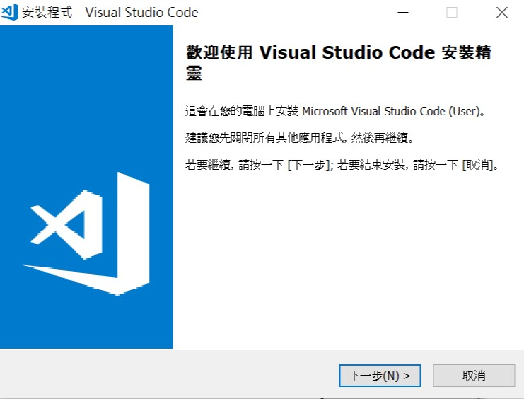
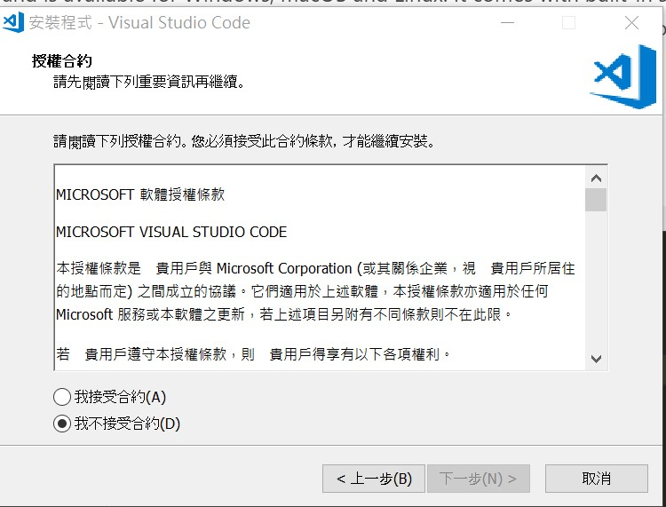
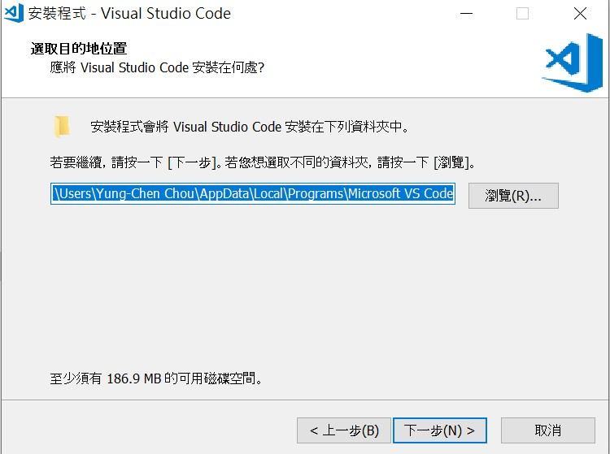
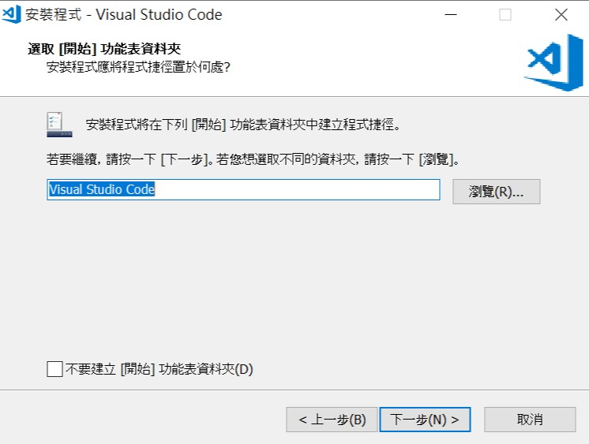
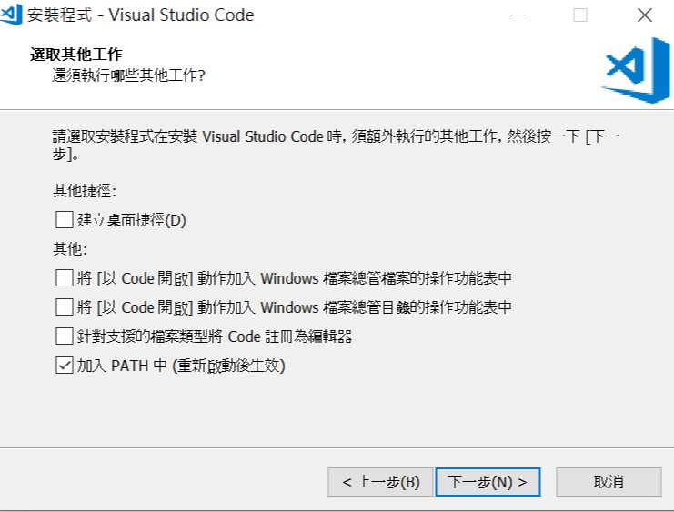
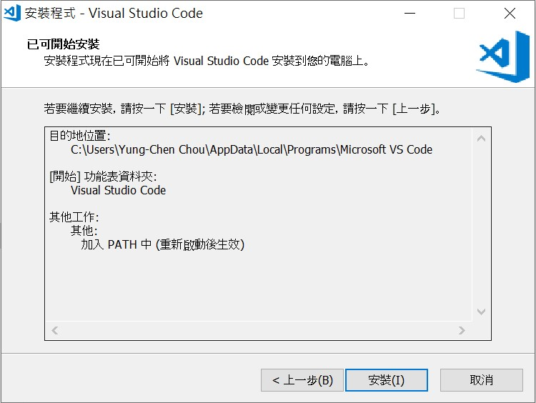
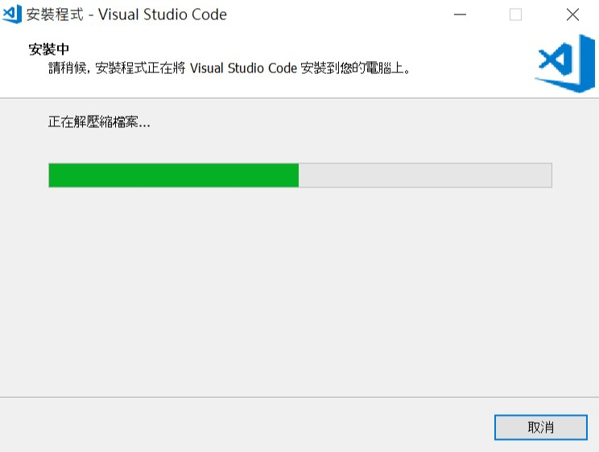
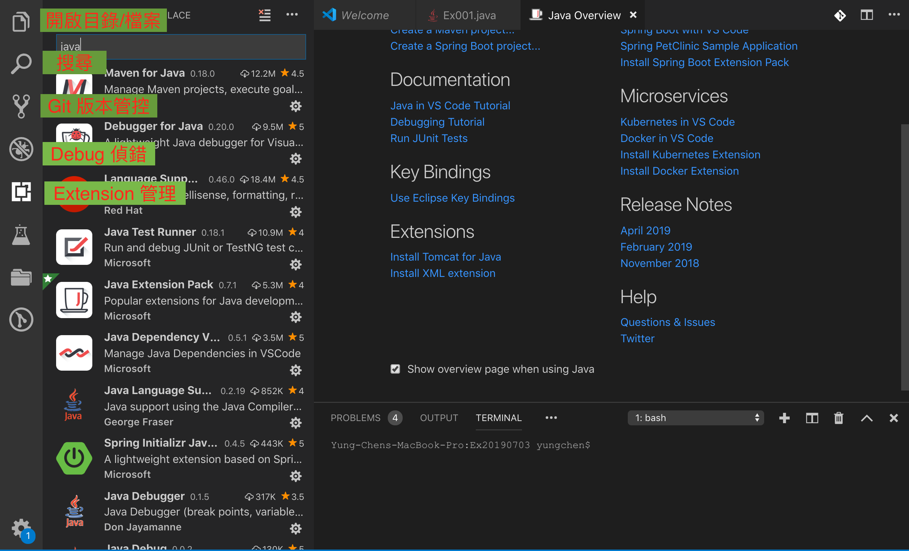
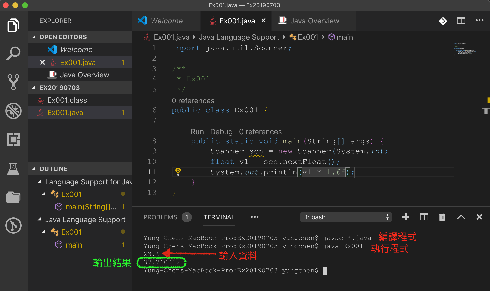

程式編輯器
Visual Studio Code
Visual Studio Code 是 Microsoft 公司發展的程式編輯器，它可分別運行在 Windows 系列、Linux系列及 Mac 的作業系統上。
- Step 1: 下載 Visual Studio Code
- Step 2: 選擇編寫 Java 需要用到的 Extension
- Step 3: 開啟 Terminal 並輸入 java -version 看您的 Java 版本是否正確，同時測試 path 設定是否正確。如未完成設定請參考Windows安裝JAVA及設定環境







 Figure 2-4: Visual Studio Code 介紹
 Figure 2-5: 編譯與執行 Java 程式